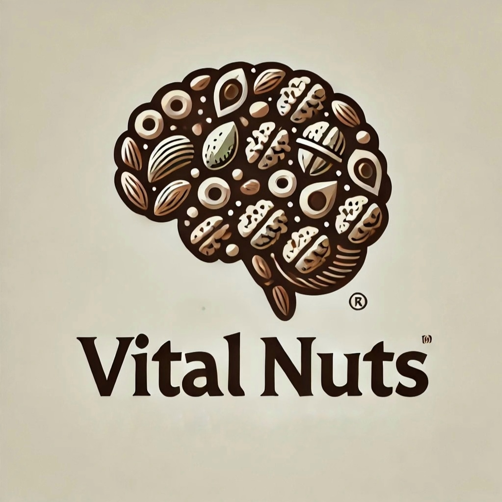

Nosotros
Somos una empresa minorista dedicada al rubro de alimentación saludable y productos que ayuden a la prevención del Alzheimer. El Alzheimer es el resultado de lesiones que afectan al cerebro, como la memoria, el pensamiento y la capacidad de realizar actividades cotidianas. Esta enfermedad es la más común, pues aproximadamente más de 55 millones de personas padecen de esta.
Nuestro Producto
Frutos secos para combatir el deterioro cognitivo (almendras, nueces y avellanas). Su alto contenido en vitaminas del grupo B, Omega 3, Omega 6 fósforo, cobre, calcio, zinc y hierro los hace indispensables para mantener la mente activa y fresca.
Por lo cual, se recomienda comer aproximadamente 30 gramos, lo que equivale a un puñado. Nuestro producto se diferencia de la competencia al ser una opción 100% natural es decir sin ningún saborizante como la sal o la azúcar, esto con el fin de no perder su valor nutricional.
Buscamos brindar y cumplir con las expectativas de calidad personas mayores de 60 años, sean hombres o mujeres que valoran la salud, el bienestar, y que buscan prevenir enfermedades que vivan en zonas urbanas y suburbanas con acceso a tiendas de salud, farmacias y supermercados que venden productos saludables.

Misión
Nuestra misión es proporcionar frutos secos nutritivos y accesibles, educando a la comunidad sobre los beneficios de una alimentación saludable para la salud cognitiva. Nos comprometemos a apoyar a las personas mayores y a sus cuidadores en su camino hacia un envejecimiento activo y saludable.
Visión
Ser reconocidos como líderes en la promoción de la salud cerebral a través de la alimentación, ofreciendo productos de calidad que contribuyan a la prevención del Alzheimer y mejoren la calidad de vida de las personas mayores.